1.
A "slippy map" is usually made of tiles.

Tiling chops the map into pieces to quickly load only the part of the map in view.
maps.stamen.com
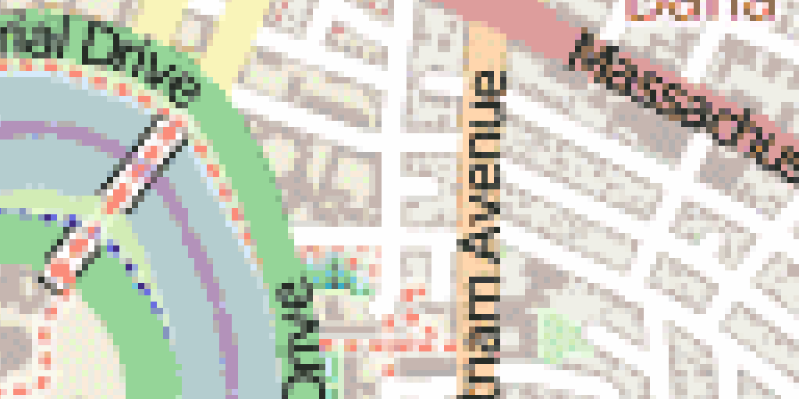
Tiles are usually pre-rendered raster images, although vector tiles are on the rise.
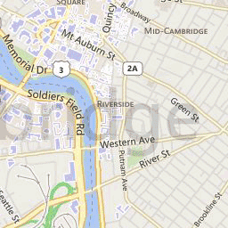
256 x 256 pixels.
Standardized locations.
20ish zoom levels.
zoom, x, y
e.g. .../14/4955/6059.png
Number of tiles at zoom level z:
22z
At the resolution of my computer, a world map at zoom 21 would be nearly 78 miles square!
Bing Maps Tile System

3.
Tiled web maps use the Mercator projection.
Wikipedia
The math is simple!
x = λ
y = ln(tan φ + sec φ)
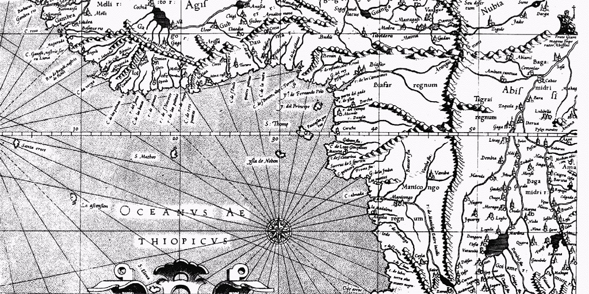
Mercator's map was designed for marine navigation. Lines of constant bearing are straight.
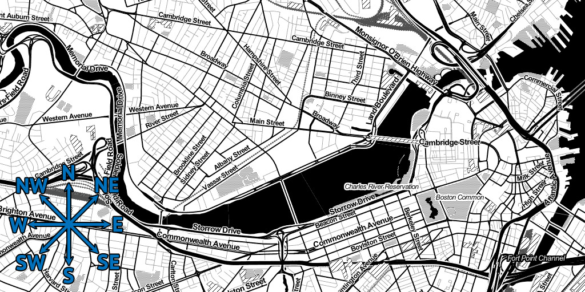
At a local scale, this means that shape and direction are preserved.
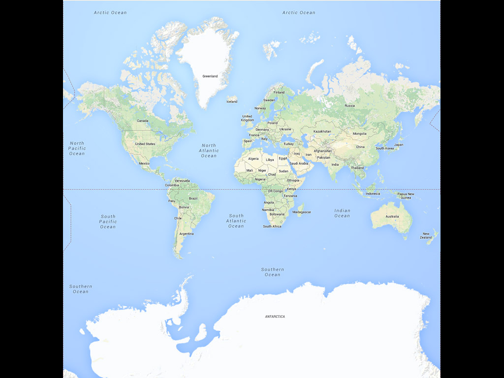
4.
A Mercator map of the world is not a map of the world.
ln(tan 90° + sec 90°) = Infinity
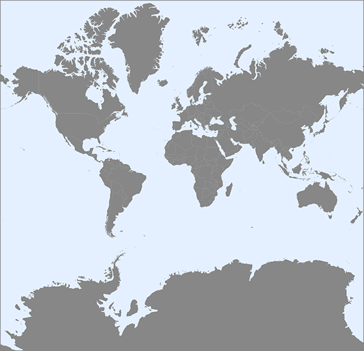
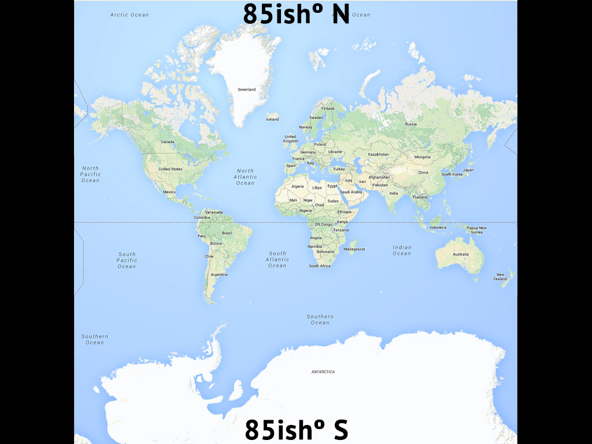
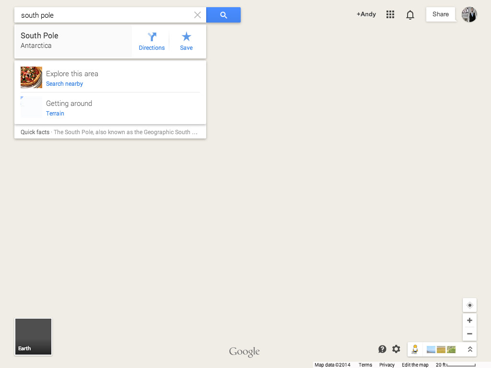
5.
Be suspicious of web map comparisons "at the same scale."
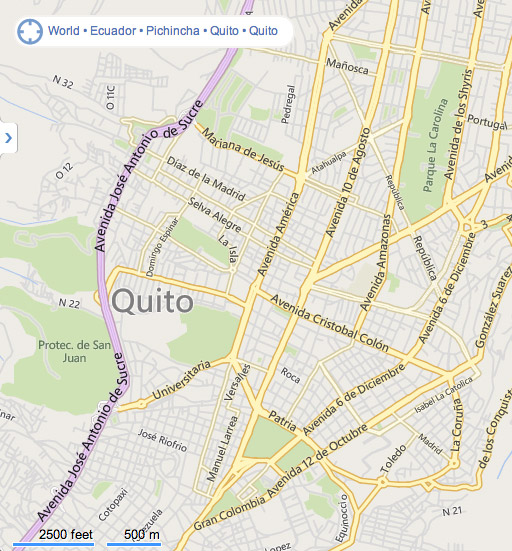
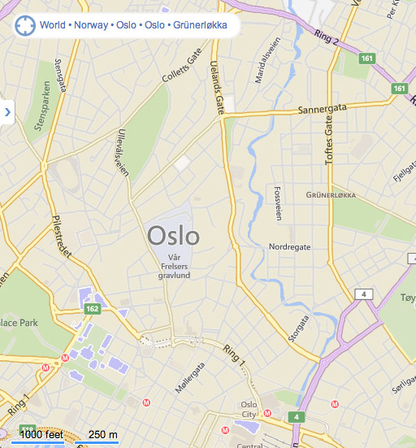
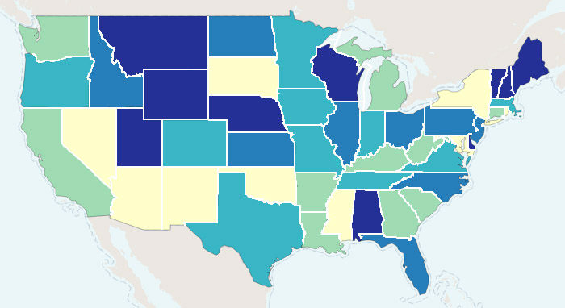
So avoid areal representations in web maps at small scale.

6.
You can make your own tiles!

Thanks to Alan McConchie, Beth Schechter, and the Maptime team for much of this material!
Anatomy of a Web Map


{kind=link}